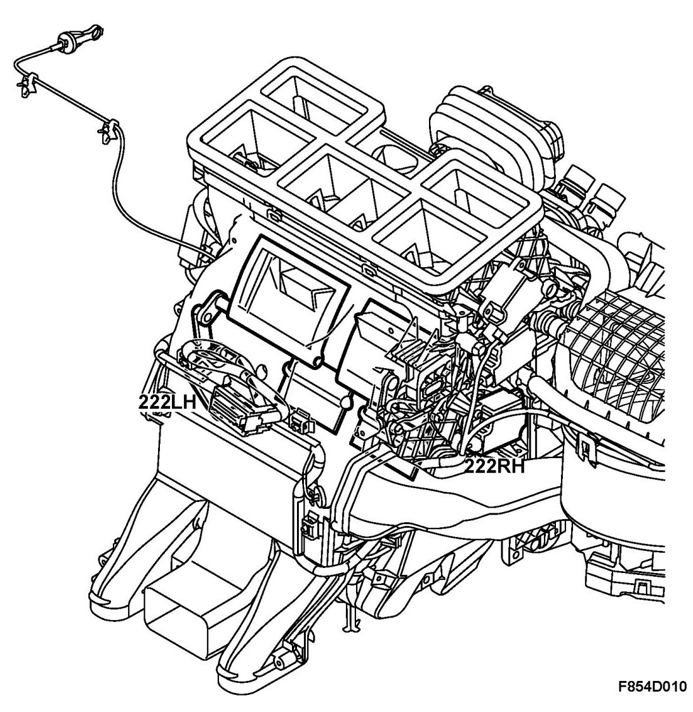
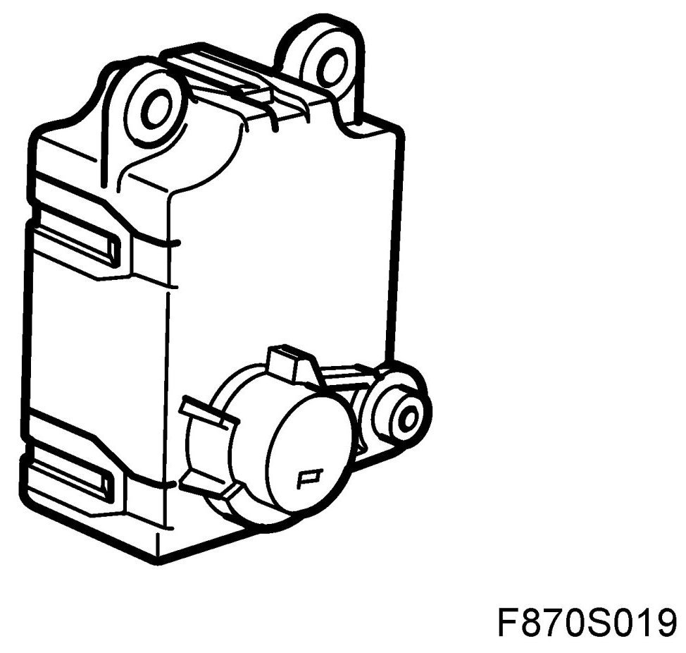
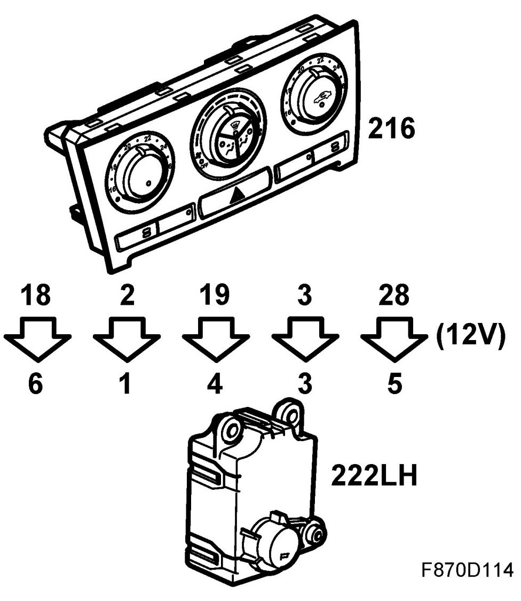
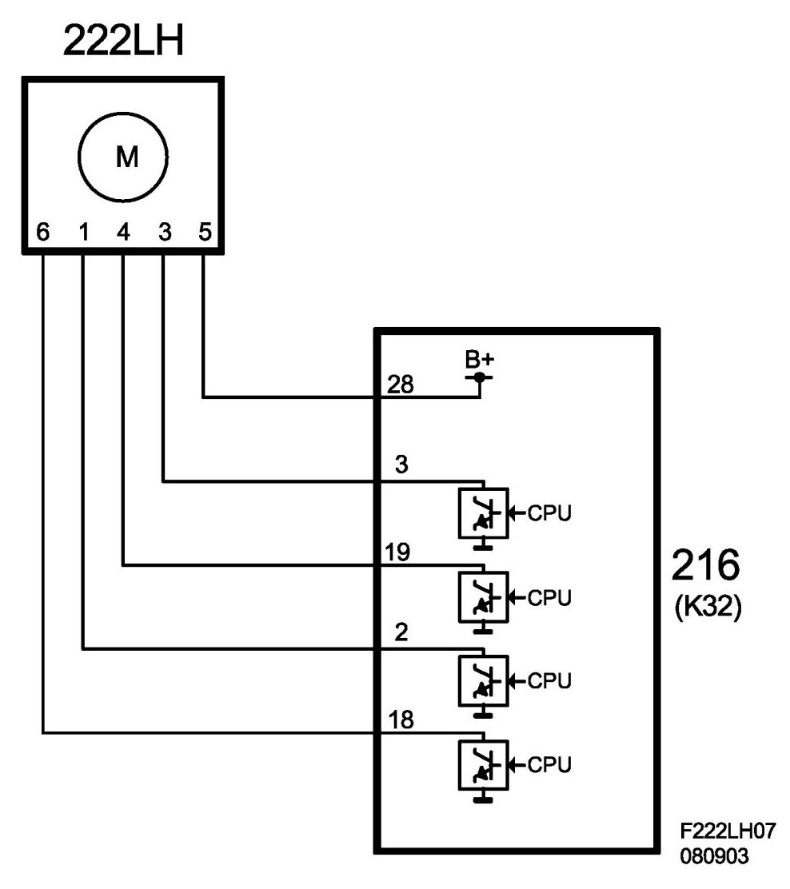

Motor, Air-Mixing Damper, Left (222LH)
Motor, Air-mixing Damper, Left (222LH)
Location
Motor, air-mixing damper, left (222LH).
Main task
The stepping motor is connected by a linkage to the damper for air mixing the left climate zone.

Type
The unipolar stepping motor consists of a rotor (10 poles) and four stator windings. A gearbox transfers the power from the rotor to the lever which controls the damper.

Connect
The four stepping motor windings receive a common B+ feed from ACC unit pin 28 (K32) and grounds each corresponding winding (pin 18, 2, 19 and 3 in K32) in a specific order thus operating the motor in short pulses, which explains the name stepping motor. The rotational direction can be changed.


When the stepping motor is stationary, two windings are continuously grounded in order to lock the motor. The stepping motor does not need to be reconnected to the control module (position sensor). By sending a specific number of ground pulses, the ACC unit knows how far the air distribution damper has moved.